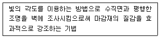
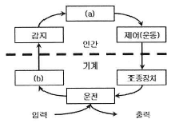
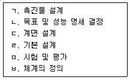
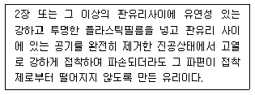

실내건축산업기사 (2020-08-22 기출문제)
1과목: 실내디자인론
1. 실내디자인의 범위에 관한 설명으로 옳지 않은 것은?
- 인간에 의해 점유되는 공간을 대상으로 한다.
- 휴게소나 이벤트 공간 등의 임시적 공간도 포함된다.
- 항공기나 선박 등의 교통수단의 실내디자인도 포함한다.
- 바닥, 벽, 천장 중 2개 이상의 구성요소가 존재하는 공간이어야 한다.
(정답률: 72%)

2. 황금비례에 관한 설명으로 옳지 않는 것은?
- 1 : 1.618의비례이다.
- 기하학적인 분할방식이다.
- 고대 이집트인들이 창안하였다.
- 몬드리안의 작품에서 예를 들 수 있다.
(정답률: 78%)
3. 주택 계획에서 LDK(Living Dining Kitchen)형에 관한 설명으로 옳지 않은 것은?
- 동선을 최대한 단축시킬 수 있다.
- 소요면적이 많아 소규모 주택에서는 도입이 어렵다.
- 거실, 식당, 부엌을 개방된 하나의 공간에 배치한 것이다.
- 부엌에서 조리를 하면서 거실이나 식당의 가족과 대화할 수 있는 장점이 있다.
(정답률: 87%)
4. 상업공간 중 음식점의 동선계획에 관한 설명으로 옳지 않은 것은?
- 주방 및 팬트리의 문은 손님의 눈에 안 보이는 것이 좋다.
- 팬트리에서 일반석의 서비스의 동선과 연회실의 동선을 분리한다.
- 출입구 홀에서 일반석으로의 진입과 연회석으로의 진입을 서로 구별한다.
- 일반석의 서비스 동선은 가급적 막다른 통로 형태로 구성하는 것이 좋다.
(정답률: 87%)
5. 시각적인 무게나 시선을 끄는 정도는 같으나 그 형태나 구성이 다른 경우의 균형을 무엇아라고 하는가?
- 정형 균형
- 좌우 균형
- 대칭적 균형
- 비대칭형 균형
(정답률: 78%)
6. 다음 설명에 알맞은 조명의 연출 기법은?

- 실루엣 기법
- 스파클 기법
- 글레이징 기법
- 빔 플레이 기법
(정답률: 70%)
7. 점의 조형효과에 관한 설명으로 옳지 않은 것은?
- 점이 연속되면 선으로 느끼게 한다.
- 두 개의 점이 있을 경우 두 점의 크기가 같을 때 주의력은 균등하게 작용한다.
- 배경의 중심에 있는 하나의 점은 점에 시선을 집중시키고 역동적인 효과를 느끼게 한다.
- 배경의 중심에서 벗어난 하나의 점은 점을 둘러싼 영역과의 사이에 시각적 긴장감을 생성한다.
(정답률: 65%)
8. 형태의 지각에 관한 설명으로 옳지 않은 것은?
- 폐쇄성 : 폐쇄된 형태는 빈틈이 있는 형태들보다 우선적으로 지각된다.
- 근접성 : 거리적, 공간적으로 가까이 있는 시각적 요소들은 함께 지각된다.
- 유사성 : 비슷한 형태, 규모, 색채, 질감, 명암, 팬턴의 그룹은 하나의 그룹으로 지각된다.
- 프래그넌츠 원리 : 어떠한 형태도 그것을 될 수 있는 단순하고 명료하게 볼 수 있는 상태로 지각하게 된다.
(정답률: 64%)
9. 실내공간의 구성요소인 벽에 관한 설명으로 옳지 않은 것은?
- 벽면의 형태는 동선을 유도하는 역할을 담당하기도 한다.
- 벽체는 공간의 폐쇄성과 개방성을 조절하여 공간감을 형성한다.
- 비내력벽은 건물의 하중을 지지하며 공간과 공간을 분리하는 칸막이 역할을 한다.
- 낮은 벽은 영역과 영역을 구분하고 높은 벽은 공간의 폐쇄성이 요구되는 곳에 사용된다.
(정답률: 83%)
10. 다음 중 실내공간계획에서 가장 중요하게 고려하여야 하는 것은?
- 조명스케일
- 가구스케일
- 공간스케일
- 인체스케일
(정답률: 82%)
11. 사무소 건축의 코어 유형 중 코어 프레임(core frame)이 내력벽 및 내진구조의 역할을 하므로 구조적으로 가장 바람직한 것은?
- 독립형
- 중심형
- 편심형
- 분리형
(정답률: 76%)
12. 주택 식당의 조명계획에 관한 설명으로 옳지 않은 것은?
- 전체조명과 국부조명을 병용한다.
- 한색계의 광원으로 깔끔한 분위기를조성하는 것이 좋다.
- 조리대 위에 국부조명을 설치하여 필요한 조도를 맞춘다.
- 식탁에는 조사 방향에 주의하여 그림자가 지지 않게 한다.
(정답률: 74%)
13. 시스템 가구에 관한 설명으로 옳지 않은 것은?
- 건물, 가구, 인간과의 상호관계를 고려하여 치수를 산출한다.
- 건물의 구조부재, 공간구성 요소들과 함께 표준화되어 가변성이 적다.
- 한 가구는 여러 유니트로 구성되어 모든 치수가 규격화, 모듈화 된다.
- 단일 가구에 서로 다른 기능을 결합시켜 수납기능을 향상시킬 수 있다.
(정답률: 60%)
14. 채광을 조절하는 일광 조절장치와 관련이 없는 것은?
- 루버(louver)
- 커튼(curtain)
- 디퓨져(diffuser)
- 베니션블라인드(venetian blind)
(정답률: 86%)
15. 상업공간 진열장의 종류 중에서 시선 아래의 낮은 진열대를 말하며 의류를 펼쳐 놓거나 작은 가구를 이용하여 디스플레이 할 때 주로 이용되는 것은?
- 쇼 케이스(show case)
- 하이 케이스(high case)
- 샘플 케이스(sample case)
- 디스플레이 테이블(display table)
(정답률: 77%)
16. 다음 중 실내공간에 있어 각 부분의 치수계획이 가장 바람직하지 않은 것은? (문제 오류로 가답안 발표시 2번으로 발표되었으나, 확정답안 발표시 2번, 4번으로 정답처리 되었습니다. 여기서는 가답안인 2번을 누르면 정답 처리 됩니다.)
- 주택의 복도폭: 1500mm
- 주택의 침실문 폭: 600mm
- 주택 현관문의 폭: 900mm
- 주택 거실의 천장높이: 2300m
(정답률: 85%)
17. 단독주택의 부엌계획에 관한 설명으로 옳지 않은 것은?
- 가사 작업을 인체의 활동 범위를 고려하여야 한다.
- 부엌은 넒으면 넓을수록 동선이 길어지기 때문에 편리하다.
- 부엌은 작업대를 중심으로 구성하되 충분한 작업대의면적이 필요하다.
- 부엌의크기는 식생활 양식, 부엌 내에서의 가사 작업 내용, 작업대의 종류, 각종 수납 공간의 크기 등에 영향을 받는다.
(정답률: 87%)
18. 사무소 건축의 실단위 계획 중 개방식 배치에 관한 설명으로 옳지 않은 것은?
- 소음의 우려가 있다.
- 프라이버시의 확보가 용이하다.
- 모든 면적을 유용하게 이용할 수 있다.
- 방의 길이나 깊이에 변화를 줄 수 있다.
(정답률: 86%)
19. 실내디자인의 요소 중 천장의 기능에 관한 설명으로 옳은 것은?
- 바닥에 비해 시대와 양식에 의한 변화가 거의 없다.
- 외부로부터 추위와 습기를 차단하고 사람과 물건을 지지한다.
- 공간을 에워싸는 수직적 요소로 수평방향을 차단하여 공간을 형성한다.
- 접촉빈도가 낮고 시각적 흐름이 최종적으로 멈추는 곳으로 다양한 느낌을 줄 수 있다.
(정답률: 69%)
20. 다음 중 전시공간의 규모 설정에 영향을 주는 요인과 가장 거리가 먼 것은?
- 전시방법
- 전시의 목적
- 전시공간의 세장비
- 전시자료의 크기와 수량
(정답률: 72%)
2과목: 색채 및 인간공학
21. 근육의 대사(metabolism)에 관한 설명으로 옳지 않은 것은?
- 산소를 소비하여 에너지를 잘생시키는 과정이다.
- 음식물을 기계적 에너지와 열로 전환하는 과정이다.
- 신체 활동 수준이 아주 낮은 경우에 젖산이 다량 축적된다.
- 산소 소비량을 측정하면 에너지 소비량을 추정할 수 있다.
(정답률: 62%)
22. 그림과 같은 인간 - 기계 시스템의 정보 흐름에 있어 빈 칸의 (a)와(b)에 들어갈 용어로 옳은 것은?

- (a) : 표시장치, (b) : 정보처리
- (a) : 의사결정, (b) : 정보저장
- (a) : 표시장치, (b) : 의사결정
- (a) : 정보처리, (b) : 표시장치
(정답률: 53%)
23. 수공구 설계의 기본 원리로 볼 수 없는 것은?
- 손잡이의 단면은 원형을 피할 것
- 손잡이의 재질은 미끄럽지 않을 것
- 양손잡이응 모두 고려한 설계일 것
- 수공구의 무게를 줄이고 무게의 균형이 유지될 것
(정답률: 67%)
24. 시각 자극에 대한 정보처리 과정에서 자극에 의미를 부여하고 해석하는 것은?
- 감각
- 지각
- 감성
- 정서
(정답률: 55%)
25. I cd인 광원에서는 약 몇 루멘(lm)의 광량을 방출하는가?
- 3.14
- 6.28
- 9.42
- 12.57
(정답률: 45%)
26. 다음 중 정량덕 표시장치의 지침(指針) 설계에 있어 일반적인 요령으로 적절하지 않은 것은?
- 선각이 20°정도 되는 뽀족한 지침을 사용한다.
- 지침의 끝은 작은 눈금과 겹치도록 한다.
- 시차를 없애기 위하여 지침을 눈금면에 밀착시킨다.
- 원형 눈금의 경우 지침의 색은 선단에서 눈금의 중심까지 칠한다.
(정답률: 48%)
27. 피로 측정방법의 분류에 있어 감각기능검사에 속하는 것은?
- 심박수 검사
- 근전도 검사
- 단순반응시간 검사
- 에너지대사량 검사
(정답률: 60%)
28. 인간공학에 있어 시스템 설계 과정의 주요 단계가 아래와 같은 경우 단계별 순서가 올바르게 나열된 것은?

- ㄴ → ㅂ → ㄹ → ㄷ → ㄱ → ㅁ
- ㄴ → ㄹ → ㄷ → ㅂ → ㄱ → ㅁ
- ㅂ → ㄷ → ㄹ → ㄴ → ㄱ → ㅁ
- ㅂ → ㄹ → ㄴ → ㄷ → ㄱ → ㅁ
(정답률: 61%)
29. 망막을 구성하고 있는 세포 중 색채를 식별하는 기능을 가진 세포는?
- 공막
- 원추체
- 간상체
- 모양체
(정답률: 58%)
30. 신체동작의 유형 중 팔굽혀펴기와 같은 동작에서 팔꿈치를 굽히는 동작에 해당하는 것은?
- 굴곡(flexion)
- 신전(extension)
- 외전(abduction)
- 내전(adduction)
(정답률: 60%)
31. 색채를 표시하는 방법 중 인간의 색 지각을 기초로 지각적으로 등보성에 근거한 것은?
- 현색계
- 혼색계
- 혼합계
- 표준계
(정답률: 48%)
32. 인쇄의혼색과정과 동일한 의미의 혼색을 설명하고 있는 것은?
- 컴퓨터 모니터, TV 브라운관에서 보여지는 혼색
- 팽이를 돌렸을 때 보여지는 혼색
- 투명한 색유리를 겹쳐 놓았을 때 보여지는 혼색
- 채도 높은 빨강의 물체를 응시한 후 녹색의 잔상이 보이는 혼색
(정답률: 48%)
33. ISCC-NBS 색명법 색상 수식어에서 채도, 명도의 가장 선명한 톤을 지칭하는 수식어는?
- pale
- brilliant
- vivid
- strong
(정답률: 69%)
34. 다음 중 현색계에 속하지 않는 것은?
- Munsell 색체계
- CIE 색체계
- NCS 색체계
- DIN 색체계
(정답률: 48%)
35. 문ㆍ스펜서(P.Moon & D. E. Spencer)의 색채조화론에 대한 설명 중 틀린 것은?
- 먼셀 색체계로 설명이 가능하다.
- 정량적으로 표현이 가능하다.
- 오메가 공간으로 설정되어 있다.
- 색채의 면적관계를 고려하지 않는다.
(정답률: 61%)
36. 사람의 눈의 기관 중 망막에 대한 설명으로 옳은 것은?
- 색을 지각하게 하는 간상체, 명암을 지각하는 추상체가 있다.
- 추상체에는 RED, YELLOW, BLUE를 지각하는 3가지 세포가 있다.
- 시신경으로 통하는 수정체 부분에는 시세포가 존재한다.
- 망막의 중심와 부분에는 추상체가 밀집하여 분포되어 있다.
(정답률: 42%)
37. 푸르킨예 현상에 대한 설명으로 옳은 것은?
- 어떤 조명 아래에서 물체색을 오랫동안 보면 그 색의 감각이 약해지는 현상
- 수면에 뜬 기름이나, 전복껍질에서 나타나는 색의 현상
- 어두워질 때 단파장의 색이 잘보이는 현상
- 노랑, 빨강, 초록 등 유채색을 느끼는 세포의 지각 현상
(정답률: 54%)
38. 건강, 산, 자연, 산뜻함 등을 상징하는 색상은?
- 보라
- 파랑
- 초록
- 흰색
(정답률: 82%)
39. 인류생활, 작업상의 분위기, 환경 등을 상쾌하고 능률적으로 꾸미기 위한 것과 관련된 용어는?
- 색의 조화 및 배색(Color harmony and combination)
- 색채조절(Color conditioning)
- 색의대비(Color contrast)
- 컬러 하모니 메뉴얼(Color harmony manual)
(정답률: 46%)
40. 상품의 색채기획단계에서 고려해야 할 사항으로 옳은 것은?
- 가공, 재료 특성보다는 시장성과 심미성을 고려해야 한다.
- 재현성에 얽매이지 말고 색상관리를 해야한다.
- 유사제품과 연계제품의 색채와의 관계성은 기획단계에서 고려되지 않는다.
- 색료를 선택할 때 내광, 내후성을 고려해야 한다.
(정답률: 62%)
3과목: 건축재료
41. 다음 중 무기질 단열재료가 아닌 것은?
- 암면
- 유리섬유
- 펄라이트
- 셀룰로오스
(정답률: 47%)
42. 건축용으로 많이 사용되는 석재의 역학적 성질 중 압축강도에 관한 설명으로 옳지 않은 것은?
- 중량이 클수록 강도가 크다.
- 결정도와 결합상태가 좋을수록 강도가 크다.
- 공극률과 구성입자가 클수록 강도가 크다.
- 함수율이 높을수록 강도는 저하된다.
(정답률: 51%)
43. 목재건조의 목적 및 효과가 아닌 것은?
- 중량의 경감
- 강도의 증진
- 가공성 증진
- 균류 발생의 방지
(정답률: 48%)
44. 시멘트 종류에 따른 사용용도를 나타낸 것으로 옳지 않은 것은?
- 조강 포틀랜드시멘트 - 한중콘크리트 공사
- 중용열 포틀랜드시멘트 - 매스콘크리트 및 댐공사
- 고로시멘트 - 타일 줄눈시공시
- 내황산염 포틀랜드시멘트 - 온천지대나 하수도공사
(정답률: 57%)
45. 콘크리트의 배합설계 시 표준이 되는 골재의 상태는?
- 절대건조상태
- 기건상태
- 표면건조 내부포화상태
- 습윤상태
(정답률: 43%)
46. 알루미늄에 관한 설명으로 옳지 않은 것은?
- 250~300℃에서 풀림한 것은 콘크리트 등의 알칼리에 침식되지 않는다.
- 비중은 철의 1/3 정도이다.
- 전연성이 좋고 내식성이 우수하다.
- 온도가 상승함에 따라 인장강도가 급격히 감소하고 600℃에 거의 0이 된다.
(정답률: 52%)
47. 보통 판유리의 조성에 산화철, 니켈, 코발트 등의 금속 산화물을 미량 첨가하고 착색이 되게 한 유리로서, 단열유리라고도 불리는 것은?
- 망입유리
- 열선흡수유리
- 스팬드럴유리
- 강화유리
(정답률: 50%)
48. 방수공사에서 아스팔트 품질 결정요소와 가장 거리가 먼 것은?
- 침입도
- 신도
- 연화점
- 마모도
(정답률: 44%)
49. 보통 철선 또는 아연도금철선으로 마름모형, 갑옷형으로 만들며 시멘트 모르타르 바름 바탕에 사용되는 금속제품은?
- 와이어 라스(wire lath)
- 와이어 메시(wire mesh)
- 메탈 라스(metal lath)
- 익스팬디드 메탈(expanded metal)
(정답률: 46%)
50. 석고계 플라스틱 중 가장 경질이며 벽 바름 재료뿐만 아니라 바닥 바름 재료로도 사용되는 것은?
- 킨스시멘트
- 혼합석고 플라스틱
- 회반죽
- 돌로마이트 플라스틱
(정답률: 42%)
51. 다음 미장재료 중 수경성에 해당되지 않는 것은?
- 보드용 석고 플라스틱
- 돌로마이트 플라스틱
- 인조석 바름
- 시멘트 모르타르
(정답률: 50%)
52. 접착제의 분류에 따른 그 예로 옳지 않은 것은?
- 식물성 접착제 - 아교, 알부민, 카세인
- 고무계 접착제 - 네오프랜, 치오콜
- 광물질 접착제 - 규산소다, 아스팔트
- 합성수지계 접착제 - 요소수지 접착제, 아크릴수지 접착제
(정답률: 49%)
53. 타일의 세조공정에서 건식제법에 관한 설명으로 옳지 않은 것은?
- 내장타일은 주로 건식제법으로 제조된다.
- 제조능률이 높다.
- 치수 정도(精度)가 좋다.
- 복잡한 형상의 것에 적당하다.
(정답률: 58%)
54. 목재의 작은 조각을 합성수지 접착제와 같은 유기질의 접착제를 사용하여 가열 압축해 만든 목재 제품을 무엇이라고 하는가?
- 집성목재
- 파티클보드
- 섬유판
- 합판
(정답률: 65%)
55. 다음 중 열경화성 합성수지에 속하지 않은 것은?
- 페놀수지
- 요소수지
- 초산비닐수지
- 멜라민수지
(정답률: 52%)
56. 아래 설명에 해당하는 유리를 무엇이라고 하는가?

- 연마판유리
- 복층유리
- 강화유리
- 접합유리
(정답률: 50%)
57. 철근콘크리트에 상요하는 굵은 골재의 최대치수를 정하는 가장 중요한 이유는?
- 철근의 사용수량을 줄이기 위해서
- 타설된 콘크리트가 철근사이를 자유롭게 통과 가능하도록 하기 위해서
- 콘크리트의 인장강도 증진을 위해서
- 사용골재를 줄이기 위해서
(정답률: 47%)
58. 수지를 지방유와 가열융합하고, 건조제를 첨가한 다음 용제를 사용하여 희석하여 만든 도료는?
- 래커
- 유성바니시
- 유성페인트
- 내열도료
(정답률: 56%)
59. 목재의 부패에 관한 설명으로 옳지 않은 것은?
- 부패균(腐敗菌)은 유섬질을 분해ㆍ감소시킨다.
- 부패균이 번식하기 위한 적당한 온도는 20~35℃ 정도이다.
- 부패균은 산소가 없어도 번식할 수 있다.
- 부패균은 습기가 없으면 번식할 수 없다.
(정답률: 66%)
60. 다음 중 회반죽에 여물을 넣는 가장 주된 이유는?
- 균열을 방지하기 위하여
- 강도를 높이기 위하여
- 경화속도를 높이기 위하여
- 경도를 높이기 위하여
(정답률: 60%)
4과목: 건축일반
61. 건축허가 등을 할 때 미리 소방본부장 또는 소장서장의 동의를 받아야 하는 건축물 등의 범위 기준에 해당하지 않는 것은?
- 연면적 200m2의 수련시설
- 연면적 200m2의 노유자시설
- 연면적 300m2의 근린생활시설
- 연면적 400m2의 의료시설
(정답률: 42%)
62. 방염성능기준 이상의 실내장식물 등을 설치하여야 하는 특정소방대상물에 해당하지 않는 것은?
- 교육연구시설 중 합숙소
- 방송통신시설 중 방송국
- 건축물의 옥내에 있는 종교시설
- 건축물의 옥내에 있는 수영장
(정답률: 69%)
63. 공장의 용도로 쓰는 건축물로서 그 용도로 쓰는 바닥면적의 합계가 최소 얼마 이상인 경우 주요 구조부를 내화구조로 하여야 하는가? (단, 화재의 위험이 적은 공장으로서 국토교통부령으로 정하는 공장은 제외한다.)
- 200m2
- 500m2
- 1000m2
- 2000m2
(정답률: 37%)
64. 목재 접합 시 주의사항이 아닌 것은?
- 접합은 응력이 적은 곳에서 만들 것
- 목재는 될 수 있는 한 적게 깎아내어 약하게 되지 않게 할 것
- 접합의 단면은 응력 방향과 평행으로 할 것
- 공작이 간단한 것을 쓰고 모양에 치중하지 말 것
(정답률: 44%)
65. 소방시설의 종류 중 경보설비에 속하지 않는 것은?
- 비상방송설비
- 비상벨설비
- 가스누설경보기
- 무선통신보조설비
(정답률: 71%)
66. 건축구조에서 일체식 구조에 속하는 것은?
- 철골구조
- 돌구조
- 벽돌구조
- 철골ㆍ철근 콘크리트구조
(정답률: 62%)
67. 건축물의 피난층 또는 피난층의 승강장으로부터 건축물의 바깥쪽에 이르는 통로에 경사로를 설치하여야 하는 판매시설의 연면적 기준은?
- 1000m2 미만
- 2000m2 미만
- 3000m2 이상
- 5000m2 이상
(정답률: 28%)
68. 비잔틴 건축의 구성요소와 관련이 없는 것은?
- 펜던티브(pendentive)
- 부주두(dosseret)
- 돔(dome)
- 크로스 리브 볼트(cross rib vault)
(정답률: 41%)
69. 거실의 채광 및 환기를 위한 창문 등이나 설비에 관한 기준 내용으로 옳은 것은?
- 채광을 위하여 거실에 설치하는 창문등의 면적은 그 거실의 바닥면적의 20분의 1이상이어야 한다.
- 환기를 위하여 거실에 설치하는 창문등의 면적은 그 거실의 바닥면적의 10분의 1이상이어야 한다.
- 오피스텔에 거실 바닥으로부터 높이 1.2m이하 부분에 여닫을 수 있는 창문을 설치하는 경우에는 높이 1.0m 이상의 난간이나 이와 유사한 추락방지를 위한 안전 시설을 설치하여야 한다.
- 수시로 개방할 수 있는 미닫이로 구획된 2개의 거실은 1개의 거실로 본다.
(정답률: 41%)
70. 소방시설등의 자체점검 중 종합정밀점검 대상에 해당하지 않는 것은?
- 스프링클러설비가 설치된 특정소방대상물
- 물분무등소화설비가 설치된 연면적 5,000m2의 위험물 제조소
- 제연설비가 설치된 터널
- 옥내소화전설비가 설치된 연면적 1,000m2의 국공립학교
(정답률: 31%)
71. 건축물의 구조기준 등에 관한 규칙에 따라 조적식구조인 경계벽의 두께는 최소 얼마이상으로 해야 하는가? (단, 경계벽이란 내력벽이 아닌 그 밖의 벽을 포함한다.)
- 9㎝
- 12㎝
- 15㎝
- 20㎝
(정답률: 45%)
72. 철골조 기중(작은 지름 25㎝이상)이 내화구조 기준에 부합하기 위해서 두께를 최소 7㎝ 이상 보강해야 하는 재료에 해당하지 않는 것은?
- 콘크리트 블록
- 철망 모르타르
- 벽돌
- 석재
(정답률: 49%)
73. 옥상광장 또는 2층 이상인 층에 있는 노대의 주위에 설치하여야 하는 난간의 최소 높이 기준은?
- 1.0m 이상
- 1.1m 이상
- 1.2m 이상
- 1.5m 이상
(정답률: 59%)
74. 르네상스 건축양식에 해당하는 건축물은?
- 영국 솔즈베리 대성당
- 이탈리아 피렌체 대성당
- 프랑스 노트르담 대성당
- 독일 울름 대성당
(정답률: 52%)
75. 학교의 바깥쪽에 이르는 출입구에 계단을 대체하여 경사로를 설치하고자 한다. 필요한 경사로의 최소 수평길이는? (단, 경사로는 직선으로 되어 있으며 1층의 바닥높이는 지상보다 50㎝ 높다.)
- 2m
- 3m
- 4m
- 5m
(정답률: 43%)
76. 음의 물리적 특성에 대한 설명으로 옳지 않은 것은?
- 음이 1초 동안에 진동하는 횟수를 주파수라고 한다.
- 인간의 귀로 들을 수 있는 주파수 범위를 가청주파수라고 한다.
- 기온이 높아지면 공기 중에 전파되는 음의 속도도 증가한다.
- 공기 중으로 전달되는 음파의 전파속도는 주파수와 비례한다.
(정답률: 40%)
77. 특정소방대상물에 사용하는 실내장식물 중 방염대상물품에 속하지 않은 것은?
- 창문에 설치하는 커튼류
- 두께가 2mm 미만인 종이벽지
- 전시용 섬유판
- 전시용 합판
(정답률: 65%)
78. 다음 중 주택의 소유자가 대통령령으로 정하는 소방시설을 설치하여야 하는 주택의 종류에 해당하지 않은 것은?
- 단독주택
- 기숙사
- 연립주택
- 다세대주택
(정답률: 41%)
79. 열 전달 방식에 포함되지 않는 것은?
- 복사
- 대류
- 관류
- 전도
(정답률: 55%)
80. 공동 소방안전관리자 선임대상 특정소방대상물의 층수 기준은? (단, 복합건축물의 경우)
- 3층 이상
- 5층 이상
- 8층 이상
- 10층 이상
(정답률: 52%)